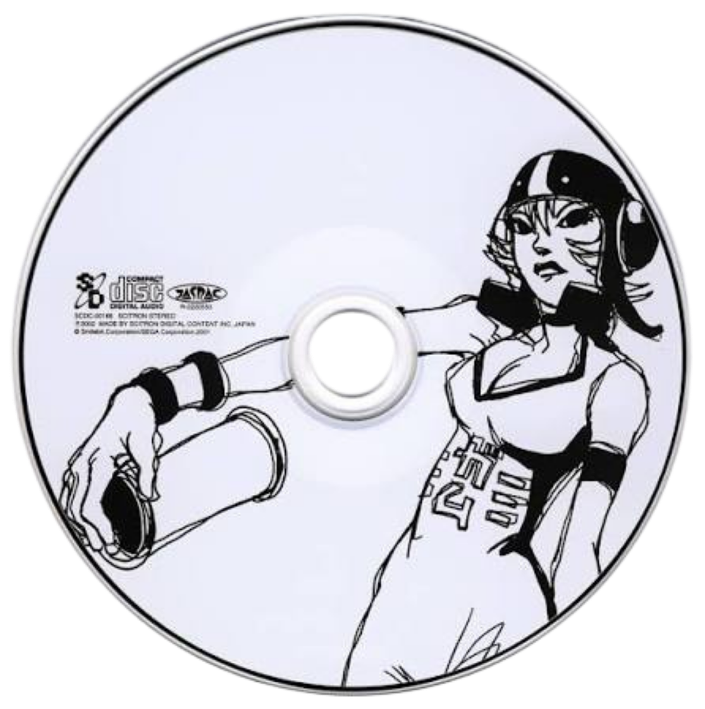

THE AIRWAVES ARE OURS.
ALL CITY.
ALL SOUND.
A pirate frequency. A restless city.
The soundtrack to your next escape.
JET SET RADIO FUTURETHE COMPLETE SOUNDTRACK · 35 CUTS

CLIQUE LE DISQUE !
CLICK TO PLAY ／ DRAG TO SPIN